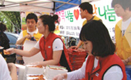
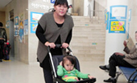

20명의 소원성취 프로젝트는 한국도미노피자 창립 20주년을 맞이하여 늘
우리 사회의 이웃들에게 관심을 가지고, 고객으로부터 받은 사랑을 고객에게
돌려주기 위한 한국도미노피자 소원성취 프로그램입니다.
한국도미노피자 창립 20주년을 기념해 마련한 소원성취 프로젝트는
홈페이지를 통해 기간 내 접수된 총 7천여 건의 사연 중 네티즌 투표와
내부심사를 거쳐 최종 20명의 다양한 소원이 선정되어 한 사람 당 500만원
한도 내에서 소원을 들어주었습니다.
병마와 싸우고 있는 고객들의 생활에 보탬이 되었으며 영화감독과 의사,
작가의 꿈을 키우는 청년들의 서포터가 되어 주는 등 한국도미노피자는
앞으로도 언제나 우리 사회의 이웃들과 함께 꿈과 희망을 함께 나누기 위해
노력할 것 입니다.
-
 안녕하세요. 전 경기도 수원시 우만종합사회복지관에서 근무하고 있는 복지사입니다. 영구임대아파트단지 안에 있는 저희 복지관에는 한 부모가정, 독거노인, 이혼 및 재혼가정, 장애인가정이 많기 때문에 아무래도 평소 외롭게 살거나 문화생활에서 소외된 분들이 많습니다. 그런 분들을 위해 저희 복지관에서는 매년 5월이 되면 ‘우만마을 가족사랑 대축제’라는 행사를 열고 있습니다. 도미노피자의 이벤트 소식을 듣고 혹시나 하는 마음에 사연을 보냈는데, 제 소원이 당첨됐다는 소식을 듣고 정말 기뻤습니다.‘ 가족사랑대축제’가 열린 5월 6일과 7일, 소원대로 도미노피자에서는 맛있는 피자를 그것도 무려 200판이나 배달해주셨어요. 아이들은 맛있는 피자 냄새에 뛸 듯이 기뻐했고, 어르신들께서도 너무나도 반기시고 맛있게 드시더군요. 도미노피자 덕분에 더욱 풍성하고 즐거운 축제가 되었답니다.
-
다섯 살 아이의 엄마랍니다. 아이가 3살이 되도록 말을 하지 않아서 걱정하다가 병원을 가니 자폐경향이 있다는 진단이 내려졌습니다. 생각하지도 못했던 사실에 하늘이 무너지는 것 같았고, 눈물로 지새운 날도 많았답니다. 그러다 장애 전담 어린이집(세림 어린이집)을 알게 되었고, 올해부터 아이를 그곳에 보내게 되었어요. 특수한 어린이집이다보니 다른 곳보다 필요한 물품이 많았는데, 그 중에서도 책이 부족한것이 내내 마음에 걸렸습니다. 최종당첨 발표가 난 그 날은 정말 기뻐서 잠도 잘 오지 않더군요. 5월 중순경, 어린이집에는 아이들을 위한 557권의 책과 다양한 물품이 도착했습니다. 아이들은 너무나 좋아하며 하루 종일 책을 보고 있답니다. 도미노피자의 선물은 나눔에 대해 다시 한번 생각할 수 있는 계기가 되었던 것 같습니다.
-
비가 내리던 아침이지만 다른 날보다 일찍 눈을 떴습니다. 기다리고 기다리던 수학여행을 떠나는 날이었거든요. 모든 친구들이 기다린 수학여행이지만 하마터면 모두가 함께 가지 못할 뻔 했어요. 어려운 형편으로 여행비를 부담하기 힘든 친구들이 있었거든요. 그래서 저희 반 담임 선생님이 많은 고민을 하셨는데, 우연히 도미노피자의 이벤트를 발견하시고 신청을 하셨어요. 최종당첨자가 발표되던 날, 저희 모두 얼마나 기뻤던지! 도미노피자 덕분에 저희는 누구 하나도 빠지지 않고 즐거운 수학여행을 무사히 다녀왔고, 평생 기억될 추억을 가득 만들어 왔습니다.
-
저는 시각장애인 거주시설의 생활재활 교사입니다. 제가 있는‘한마음의 집’은 대전에 위치한 곳으로 70명의 시각장애인이 생활하고 있습니다. 사람은 대부분의 정보를 시각을 통해 얻기 때문에, 시각이 결여될 경우 일반인에 비해 발달에 치명적으로 어려움을 겪습니다. 저희 시설에 계신 분들은 이러한 어려움 때문에 성인임에도 불구하고 가족들과 함께 거주하기 힘든 분들입니다. 평생 가족여행을 해본 적 없는 분들에게 생애 최고의 여행을 선물해 드리고 싶었는데, 도미노피자 덕분에 지난 6월 나주의 스파로 1박 2일의 여행을 떠날 수 있었습니다. 이번 여행을 통해 가족들에게 좋은 추억을 만들어 드릴 수 있게 되어서 너무나 감동스럽고 기뻤습니다.
-
안녕하세요. 원주‘천사들의 집’에서 일하고 있는 복지사입니다. 120명의 장애인이 거주하고 있는 이곳은 지적장애인과 뇌성마비, 지체장애인 등을 수용하고 있는 시설입니다. 지체장애인들 중에는 일반 휠체어조차 사용하기 힘든 분들이 있답니다. 이런 분들에게는 조금 더 특별한 휠체어가 필요해요. 바로 내장구를 갖춰 휠체어를 자기 몸에 맞게 변형해야 하는 것이지요. 휠체어 내장구의 수명이 거의 다 해서 많이 고민하고 있었는데, 도미노피자의 도움으로 새 휠체어를 맞출 수 있었습니다. 저희에게 휠체어는 단순히 활동을 보조해주는 것만이 아닌, 세상과 소통을 할 수 있는 다리입니다. 그런 다리를 마련해주신 도미노피자에게 감사의 인사를 전합니다.
-
저는 농촌에서 태어나고 자라 농사에 관심이 많은 주부랍니다. 지금은 도시에 살지만 언젠간 귀농을 해서 농촌의 삶이 지금보다 풍족해지는 데에 조금이나마 도움이 되고자 합니다. 이상기온과 환경오염 때문에 고통 받는 농촌 이야기를 들을 때마다 제 부모님도 현재 겪고 계신 상황이라 더 가슴 아프고 신경이 쓰였어요. 그런데 최근 블루베리가 친환경 고소득 품종으로 각광받고 있더라고요. 연세 높으신 부모님도 어렵지 않게 재배하실 수 있는 작물이라 묘목을 사드리고 싶었습니다. 그러나 만만치 않은 비용 때문에 많이 망설이고 있었는데 도미노피자 덕분에 소원을 풀게 되었습니다. 드디어 지난 7월 저희 집 앞에 블루베리 묘목과 퇴비 등이 도착했어요. 온 가족이 힘을 합쳐 즐거운 마음으로 묘목을 심었답니다. 3년 후에는 맛있는 블루베리를 듬뿍 수확하는 농가로 성장하기를 바라고, 기회를 마련해준 도미노피자에게 진심으로 감사드립니다..
-
저는 김천의‘효 노인복지센터’에 근무하는 요양복지사입니다. 이곳은 작은 규모의 기관으로 치매노인, 독거노인, 거동이 불편한 노인 분들께 요양 서비스를 제공해 드리고 있습니다. 병원의 정기검진이나 시내에 볼 일이 있을 때 어르신들을 모셔다 드리고 있는데, 승용차로 이동하다 보니 휠체어 운반도 어렵고 사시는 곳 대부분이 험한 길이라 머리를 부딪치시기도 합니다. 좀 더 공간이 넉넉한 승합차가 필요해 소원 신청을 하였는데 당첨이 되어 너무 기뻤습니다. 도미노피자 덕분에 이제는 어르신들이 안전하고 편하게 움직일 수 있게 되었습니다. 감사합니다
-
 제 첫째 아이는 오른쪽 다리에 선천성질환인 신경섬유종을 가지고 태어났습니다. 그 섬유종이 다리 신경에 미친 탓에 자연골절이 반복될 수 있는‘선천성 경골가관절증’이란 희귀질환을 얻었습니다. 생후 11개월 때부터 깁스를 해온 아이는 앞으로 성인이 될 때까지 수 없이 많은 수술을 해야 할지도 모릅니다. 이번 수술은 세 번째 수술이었습니다. 피자와 함께 배달돼 온 전단지를 보고 신청했는데 당첨이 되어 수술 비용에 대한 부담을 크게 덜 수 있었습니다. 앞으로도 힘든 일은 많겠지만, 이제 조금씩 희망을 가져보려합니다.
-
 시온이는 선천성 난청으로 귀가 들리지 않습니다. 치료를 위해서 충청도 시골에서 서울 병원까지 버스와 전철을 갈아타며 아이를 데리고 다니다 보면 어느새 몸은 녹초가 됩니다. 인공와우수술 후에도 3년간은 거의 매일 언어치료를 다녀야 하는데 제때 치료하지 못해서 헛수고가 될까봐 걱정스러웠어요. 간절한 마음으로 적었던 꿈이 당첨되어 너무 고맙습니다. 지난 4월 28일 시온이는 드디어 인공와우 수술을 마쳤어요. 지금은 서울과 대전으로 언어재활치료를 받으러 다니고 있습니다. 물론 이벤트 당첨금으로 산 자동차를타고 말이죠. 시온이가 훗날 꼭 남을 돕는밝은천사로자라길바랍니다.
시온이는 선천성 난청으로 귀가 들리지 않습니다. 치료를 위해서 충청도 시골에서 서울 병원까지 버스와 전철을 갈아타며 아이를 데리고 다니다 보면 어느새 몸은 녹초가 됩니다. 인공와우수술 후에도 3년간은 거의 매일 언어치료를 다녀야 하는데 제때 치료하지 못해서 헛수고가 될까봐 걱정스러웠어요. 간절한 마음으로 적었던 꿈이 당첨되어 너무 고맙습니다. 지난 4월 28일 시온이는 드디어 인공와우 수술을 마쳤어요. 지금은 서울과 대전으로 언어재활치료를 받으러 다니고 있습니다. 물론 이벤트 당첨금으로 산 자동차를타고 말이죠. 시온이가 훗날 꼭 남을 돕는밝은천사로자라길바랍니다. -
저희는‘여행을 통한 치유 에세이’출판을꿈꾸는친구‘, 여행가이드북’출판을꿈꾸는친구,‘ 사진여행기’출판을 꿈꾸는 친구 이렇게‘여행’이란 키워드로 모인 세 친구들입니다. 도미노피자 덕분에 드디어 꿈꾸던 미국여행을떠날수있게되었어요. 블로그(blog. naver.com/dominostory)를 통해 도미노피자의 본고장 미국을 여행하면서 접하는 도미노피자 이야기와 생생한 여행 소식을 들려드릴 테니기대해주세요.
-
저에게는 예쁜 동생이 있습니다. 어릴적 부모님께서 돌아가시고 할머니 밑에서 힘들게 살다가 고3 때부터 일을 시작했습니다. 불우했던 환경이 힘들었던지 동생은 극심한 우울증을 앓았고 가족같이 키우던 강아지가 죽자 자살을 시도했죠. 생사를 오가는 시간을 이겨낸 뒤 동생은 장애 4급을 받았고, 재봉 기술을 배웠습니다. 중고라도 공업용 재봉틀과 원단이 필요했는데 언니로서 사줄 수가 없었던 전 너무 마음이 아팠습니다. 혹시나 해서 신청한 소원이 당첨되었고, 동생은 이제 재봉일을 하면서 희망을 가지게 되었습니다. 동생에게큰도움을줄수있는소중한보물, 너무나 감사드립니다.
-
저희 아이는 뇌병변 1급으로 중증 장애를 가지고 있습니다. 현재‘보바스어린이 재활병원’낮병동에 입원 중입니다. 저희 방에는 15명에서 20명 가량의 아이들이 재활 입원치료를 받고 있어요. 가족과 제대로 된 여행 한번 못해본 아이들을 데리고 놀이공원에라도 가서 실컷 놀고 싶었지만 상황이 여의치 않았습니다. 용기를 내어 소원을 신청했는데 당첨이 되었더군요. 저희 방 가족 모두 너무나 기뻐했답니다. 덕분에 날씨 좋은 날 서울대공원으로 나들이를 나가 사진도 찍고 장난감도 고르면서 모두 신나고 즐거운 하루를 보냈습니다. 감사합니다.
-
아내는 지난해 시한부 생을 선고받았습니다. 2년 만에 재발된 유방암은 온몸의 뼈로 급속히 진행되었고 아내의 생명을 위협했습니다. 눈물과 기도로 채우던 날들이 지나고 병세가 다시 호전되자 아내는 세상에 뭔가 도움을 주고 떠나는 게 마지막 소원이라고 했습니다. 그 동안 조금씩 병원에 기부를 했지만 큰 도움이 되질 못한다고 느낀 저는 아내의 마음을 담아 도미노피자에 소원을 신청하였습니다. 그렇게 새로 건립중인 암센터에 아내의 이름으로 성금을 기부하게 되었습니다. 저는 이것이 아내의 마지막 소원이 아니라 첫소원이되었기를희망해봅니다
-
영화감독이 꿈인 저는 늘 영화를 제작하고 싶었지만 학생의 신분으로 제작비를 충당할 수 없었습니다. 비용을 벌기 위해 도미노피자 매장에서 일하던 어느 날 소원성취 이벤트 소식을 접했고, 너무나 절실했던 마음 덕분이었는지 저의 소원이 당첨되었습니다. 그날처럼 제 인생에서 기뻤던 적은 없었던 것 같습니다. 도미노피자의 지원금으로 만들어진 영화는‘미쟝센 단편영화제’에 출품할 예정입니다. 2002년부터 시작된 이 영화제는 국내 유명 감독들의 등용문이기도 하지요. 꿈을 이뤄주신 도미도피자에 감사의 말을 전하고 싶고, 꼭 성공한 영화감독이 되겠습니다.
-
의학전문대학원 생활은 막대한 양의 공부에 지쳐 의사가 되고자 꿈꾸고 노력하였던 처음의 설렘과 열정 대신 무료함과 진부함만이 남아 있었습니다. 그 처음을 떠올리며 해외의료봉사를 생각했었지요. 준비는 생각보다 쉽지 않았지만 도미노피자의 소원 이벤트 덕분에 비행기에 오를 수 있었습니다. ‘사랑나눔의사회’라는 의료봉사 NGO를 통해 7월 31일 방글라데시로 떠났고 그곳에서 저는 하루 백 명이 넘는 환자를 만났습니다. 의료진 모두가 최선을 다한 5일 간의 봉사. 도미노피자 로부터 받은 것은 5박 6일의 여행상품권이 아니라, 의사로서의 설렘과 열정을 다시 품게 해준 행운권이었습니다.
-
4년 전 중국에서 1년 동안 일하면서 지금의 아내를 만났습니다. 결혼을 하고 한국에서 살면서 두고 온 고향을 그리워하는 아내를 알면서도 사는 게 바쁘고 여유도 없어서 중국 방문은 여의치 않았습니다. 어느 날인가 광고를 보고 지원했던 이벤트에 당첨되자, 아내와 저는 마치 꿈만 같았습니다. 도미노피자의 후원으로 찾은 연길은 그 동안 많이 달라졌더군요. 반갑게 맞아 주신 처가 식구들의 마음은 지금까지도 깊은 여운으로 남아있습니다. 아내와 저에게는 모처럼 행복하고 즐거웠던 중국 방문이었습니다.
-
중증여성장애인 주간보호센터인‘햇살터’친구들, 그리고 그 부모님들과 함께 할 수 있도록 가족캠프를 지원해주신 도미노피자에 진심으로 감사를 드립니다. 이번 캠프를 통해 저희도 사회의 한 구성원이라는 자부심을 가질 수 있었습니다. 지난 10월 6일, 2박 3일로 가족캠프를 다녀왔습니다. 많은 것을 구경했지만 특히 넓은 바다를 보며 달렸던 1시간의 레일바이크 체험은 가족캠프의 클라이맥스였어요. “예쁜추억을 만들어 주어서 고맙다”는 부모님들의 말씀이 가슴에 오래 남는 여행이었습니다.